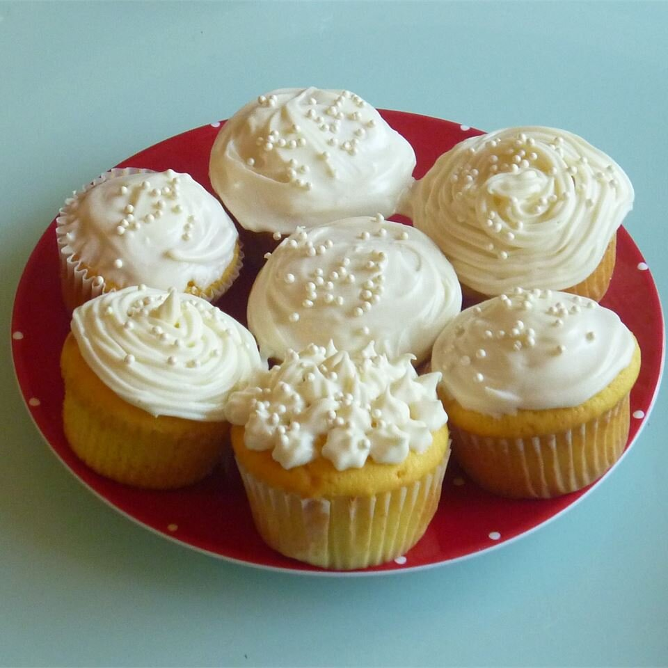

Tangy Lemon Cream Cheese Frosting

Description
Per Serving: 73 calories; protein 0.3g; carbohydrates 12.3g; fat 2.7g; cholesterol 7.7mg; sodium 20.8mg
Ingredients :
- 4 ounces cream cheese
- ¼ cup butter, softened
- 1 cup confectioners' sugar
- 2 tablespoons lemon juice
- 2 ¼ cups confectioners' sugar
- 4 drops yellow food coloring
Steps :
- Beat cream cheese and butter in a bowl until combined. Beat in powdered sugar and lemon juice.
- Beat in 2-1/4 to 2-1/2 cups more of powdered sugar till frosting is of spreading consistency. Stir in a few drops of yellow food coloring.